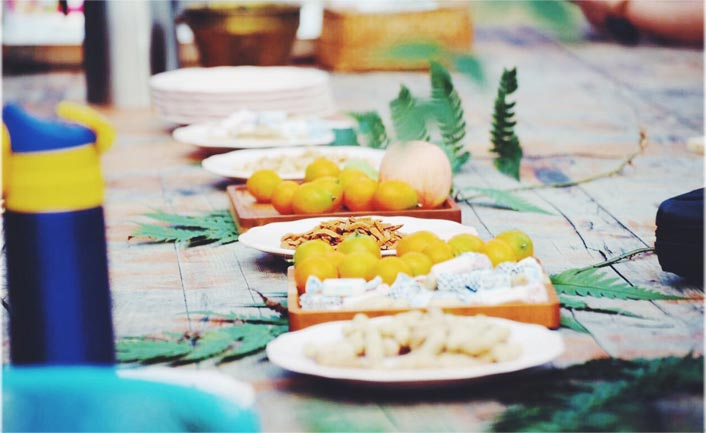

模拟文字段落 ＃ 春节“吃”文化：不可错过的十大传统美食。北京俗谚：“好吃不过饺子”，广受普通百姓的欢迎。饺子，又称“水饺”，因为形态微扁，在有些地方又被叫作“扁食”。 多用皮包馅，通过水煮或煎、炸、蒸等方法加工成熟。饺子起源于南北朝时期，是一种历史悠久的民间吃食。每逢新春佳节，饺子就更是不可缺少的美味佳肴。 ... ... 模拟文字段落＃

模拟文字段落 ＃ 春节“吃”文化：不可错过的十大传统美食。北京俗谚：“好吃不过饺子”，广受普通百姓的欢迎。饺子，又称“水饺”，因为形态微扁，在有些地方又被叫作“扁食”。 多用皮包馅，通过水煮或煎、炸、蒸等方法加工成熟。饺子起源于南北朝时期，是一种历史悠久的民间吃食。每逢新春佳节，饺子就更是不可缺少的美味佳肴。 ... ... 模拟文字段落＃
模拟文字段落 ＃ 春节“吃”文化：不可错过的十大传统美食。北京俗谚：“好吃不过饺子”，广受普通百姓的欢迎。饺子，又称“水饺”，因为形态微扁，在有些地方又被叫作“扁食”。 多用皮包馅，通过水煮或煎、炸、蒸等方法加工成熟。饺子起源于南北朝时期，是一种历史悠久的民间吃食。每逢新春佳节，饺子就更是不可缺少的美味佳肴。 ... ... 模拟文字段落＃


＃山谷里的玩法_2017.1_＃玩乐
 Zoring Park
Zoring Park Gifts That For You
Gifts That For You Librairie Avant-Garde
Librairie Avant-Garde